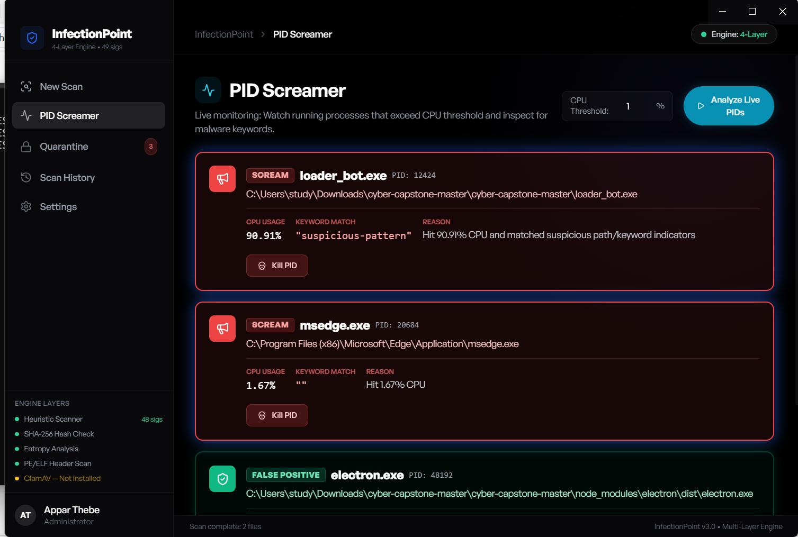

InfectionPoint Threat Detection Engine
Objective
The objective of this project was to support malware detection and process monitoring inside the InfectionPoint security tool by integrating a VirusTotal API backend workflow and a PID Screamer monitoring feature.
For the VirusTotal API portion, I connected the scanner to VirusTotal so that when a file is scanned, the tool can check whether that file hash has already been analyzed. If VirusTotal has existing results and the file is flagged, the tool reports that information in the GUI activity log.
For PID Screamer, I worked on process monitoring based on CPU usage and suspicious indicators. The GUI, activity-log display, and kill-process functionality were developed collaboratively. I did not create the kill-process feature.
Skills Learned
- Integrated the VirusTotal API into a malware-scanning workflow.
- Used file hashes to check for existing scan results.
- Reported VirusTotal results in the GUI activity log.
- Built and tested PID Screamer process monitoring.
- Reviewed process behavior with Windows Task Manager and Linux
top. - Documented collaborative security-tool development accurately.
Tools Used
- VirusTotal API
- PID Screamer
- InfectionPoint GUI
- File-hash checking and activity logging
- Windows Task Manager and Linux
top
Steps
Ref 1: VirusTotal API Scan Output

Ref 2: PID Screamer Process Monitoring

My Contribution
- Integrated the VirusTotal API backend workflow.
- Added logic to check for existing VirusTotal results.
- Helped send scan results to the GUI activity log.
- Worked on and tested PID Screamer process monitoring.
- Documented scanner behavior and project results.
The GUI layout, activity-log interface, and kill-process feature were developed collaboratively. The kill-process feature can terminate selected processes when administrative permissions are available.
Summary
This project helped me understand how security tools combine file-reputation checks, API-based threat intelligence, process monitoring, and GUI reporting. VirusTotal provided existing file-reputation results, while PID Screamer added process monitoring based on CPU usage and suspicious indicators.